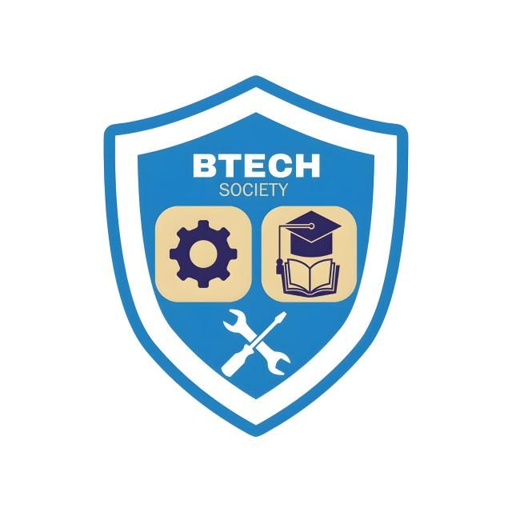

Bachelor of Technical Education-Technology
(BTECH)

BTECH is an independent program which is offered at Malawi University of Business and Applied Sciences under the Falculty of Education, Communication and Media studies(SECOMS)
In its early days, it was formerly Technical Education Science and currently, it its Technical Education Technology.
BTECH is further splitted into five major routes of specialization by the name;
- Motor Vehicle Technology
- Mechanical Technology
- Electrical Technology
- Wood Technology
- Welding Technology
At hand, the curriculum has been reviewed and final decision by management has been made that BTECH will be completed in five academic years. This begins with 2023-2024 intake🎓👷
What is the significance of studying Bachelor of Technical education technology?
BTECH is one of the most important program offered at MUBAS.
The underlying importance being its nature of offering the technical skills which greatly impact positively malawian citizens by shapening their capicity in so many field!
For exame if we talk of Electrical technology, this provides the students with full understanding of how electricity is produced and how it can be handled whilst comforming to safety rules and regulations.
Not only that, but also, Technical Education Technology being education program, produce Technical College instructors👷👷
Click on the link below to view students who were enrolled to study BTECH in the academic year 2021-2022
Names